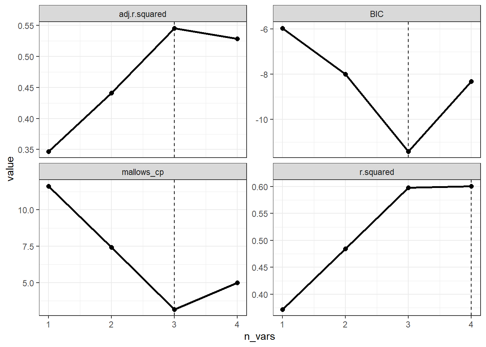

df <- data.frame(
cho = c(5.68,3.79,6.02,4.85,4.60,6.05,4.90,7.08,3.85,4.65,4.59,4.29,7.97,
6.19,6.13,5.71,6.40,6.06,5.09,6.13,5.78,5.43,6.50,7.98,11.54,5.84,
3.84),
tg = c(1.90,1.64,3.56,1.07,2.32,0.64,8.50,3.00,2.11,0.63,1.97,1.97,1.93,
1.18,2.06,1.78,2.40,3.67,1.03,1.71,3.36,1.13,6.21,7.92,10.89,0.92,
1.20),
ri = c(4.53, 7.32,6.95,5.88,4.05,1.42,12.60,6.75,16.28,6.59,3.61,6.61,7.57,
1.42,10.35,8.53,4.53,12.79,2.53,5.28,2.96,4.31,3.47,3.37,1.20,8.61,
6.45),
hba = c(8.2,6.9,10.8,8.3,7.5,13.6,8.5,11.5,7.9,7.1,8.7,7.8,9.9,6.9,10.5,8.0,
10.3,7.1,8.9,9.9,8.0,11.3,12.3,9.8,10.5,6.4,9.6),
fpg = c(11.2,8.8,12.3,11.6,13.4,18.3,11.1,12.1,9.6,8.4,9.3,10.6,8.4,9.6,10.9,
10.1,14.8,9.1,10.8,10.2,13.6,14.9,16.0,13.2,20.0,13.3,10.4)
)13 变量筛选之最优子集
最优子集法，又叫全子集回归法，全局择优法。
对于特征选择，最优子集回归是逐步回归的一个替代方案。我们在之前的推文中已经介绍过逐步回归了：变量选择之逐步（stepwise）回归法
在最优子集回归中，算法使用所有可能的特征组合来拟合模型，所以，如果有3个特征，将生成7个模型（一个简单的排列组合问题）。所以这种方法的问题就是，如果数据集有多个特征，工作量就会非常大。当特征数多于观测数时（p大于n），这个方法的效果就不会很好。
目前看来最优子集筛选变量只适用于线性回归。
13.1 准备数据
使用孙振球版医学统计学例15-1的数据。
13.2 建立模型
使用全部的4个变量建立回归方程：
f <- lm(fpg ~ cho + tg + ri + hba, data = df)
summary(f)
##
## Call:
## lm(formula = fpg ~ cho + tg + ri + hba, data = df)
##
## Residuals:
## Min 1Q Median 3Q Max
## -3.6268 -1.2004 -0.2276 1.5389 4.4467
##
## Coefficients:
## Estimate Std. Error t value Pr(>|t|)
## (Intercept) 5.9433 2.8286 2.101 0.0473 *
## cho 0.1424 0.3657 0.390 0.7006
## tg 0.3515 0.2042 1.721 0.0993 .
## ri -0.2706 0.1214 -2.229 0.0363 *
## hba 0.6382 0.2433 2.623 0.0155 *
## ---
## Signif. codes: 0 '***' 0.001 '**' 0.01 '*' 0.05 '.' 0.1 ' ' 1
##
## Residual standard error: 2.01 on 22 degrees of freedom
## Multiple R-squared: 0.6008, Adjusted R-squared: 0.5282
## F-statistic: 8.278 on 4 and 22 DF, p-value: 0.000312113.3 最优子集法
使用最优子集法筛选变量，借助leaps包实现。使用起来其实就是1行代码而已：
library(leaps)
leaps <- regsubsets(fpg ~ cho + tg + ri + hba, data = df)
summary(leaps)
## Subset selection object
## Call: regsubsets.formula(fpg ~ cho + tg + ri + hba, data = df)
## 4 Variables (and intercept)
## Forced in Forced out
## cho FALSE FALSE
## tg FALSE FALSE
## ri FALSE FALSE
## hba FALSE FALSE
## 1 subsets of each size up to 4
## Selection Algorithm: exhaustive
## cho tg ri hba
## 1 ( 1 ) " " " " " " "*"
## 2 ( 1 ) "*" " " " " "*"
## 3 ( 1 ) " " "*" "*" "*"
## 4 ( 1 ) "*" "*" "*" "*"*表示变量被包含在模型中，这个结果看起来并不是很直观，下面会结合图进行解释。
13.4 子集选择
我们首先查看rss(Residual sum of squares，残差平方和)最小的结果，因为RSS越小说明模型拟合结果越好：
which.min(summary(leaps)$rss)
## [1] 4结果表明有4个特征的模型具有最小的RSS，这是很明显的哈，因为这里就有4个自变量。。。
增加特征数量必然会减少RSS！而且必然会增加R方。我们即使添加一个完全不相关的特征，比如洛杉矶湖人队的胜场数，模型的RSS也会减少，R方也会增加。
所以只看RSS并不能帮助我们很好的选择变量。
我们这里讨论4种用于特征选择的统计方法：
- 赤池信息量准则
- 马洛斯的Cp
- 贝叶斯准则
- 调整的R方
赤池信息量准则(Akaike information criterion，AIC)，是评估统计模型的复杂度和衡量统计模型”拟合优度”（Goodness of Fit）的一种标准，是由日本统计学家赤池弘次创立和发展的。赤池信息量准则的方法是寻找可以最好地解释数据但包含最少自由参数的模型。
AIC的计算方法如下，其中p是模型中的特征数量(也就是自变量数量)，n是样本大小：
\[ \mathrm{AIC}=n*\log\Bigg(\frac{\mathrm{RSS}_p}{n}\Bigg)+2*p \]
贝叶斯信息量准则(Bayesian information criterion，BIC)和AIC类似，只不过BIC比AIC的惩罚力度更大。
BIC的计算方法如下，BIC的前半部分计算和AIC是完全一样的：
\[ \mathrm{BIC}=n*\log\left(\frac{\mathrm{RSS}_p}n\right)+p*\log(n) \]
AIC和BIC的不同点：
BIC的惩罚项比AIC大，考虑了样本个数，样本数量多，可以防止模型精度过高造成的模型复杂度过高。 AIC和BIC前半部分是一样的，BIC考虑了样本数量，样本数量过多时，可有效防止模型精度过高造成的模型复杂度过高。–参考资料2
马洛斯的Cp(Mallows’Cp)与AIC的计算也是类似，其计算公式如下，其中MSE(mean-square error, MSE)是均方误差：
\[ \mathrm{CP}=\frac{\mathrm{RSS}_{p}}{\mathrm{MSE}_{f}}-n+2*p \]
调整的R^2(修正R方)的计算公式如下：
\[ \text{修正R方}=1-\left(\frac{\mathrm{RSS}}{n-p-1}\right)/\left(\frac{\mathrm{R}\text{方}}{ n - 1 }\right) \]
前三种方法的目标是追求统计量的值最小化，调整的R方的目标是追求统计量的值最大化。这些统计方法的目的是建立一个尽可能简约的模型，换句话说，要对模型复杂性进行”惩罚”。
在线性模型中，AIC和Cp成正比，所以我们只需关注Cp即可。
下面以CP为纵坐标进行可视化：
par(mfrow=c(1,2))
plot(summary(leaps)$cp,type = "l",xlab = "number of features",ylab = "cp")
plot(leaps, scale = "Cp") # 通过Cp判断
左图横坐标是自变量数量，纵坐标是CP值大小，可以看到在变量数量为3时，CP是最小的；右边的图也是一样的意思，先看纵坐标，CP最小是3.2，此时对应的黑色块是tg,ri,hba这3个变量。
也可以用其他指标作为纵坐标进行可视化，比如调整的R2adjr2:
plot(leaps, scale = "adjr2")
或者BIC，BIC和AIC意思是一样的：
plot(leaps, scale = "bic")
可以看到3种方法得到的结果都是一样的，都是选出了tg,ri,hba这3个变量，但有时结果也是不太一样的，不用纠结。
上面是比较传统的方法，但是说实话得到的图不是很好看，如果没有教程完全不知道如何解读，非常的不优雅。
神包broom可以用于这个筛选结果，结果会返回一个tibble，看起来非常清稀易懂：
broom::tidy(leaps)
## # A tibble: 4 × 9
## `(Intercept)` cho tg ri hba r.squared adj.r.squared BIC
## <lgl> <lgl> <lgl> <lgl> <lgl> <dbl> <dbl> <dbl>
## 1 TRUE FALSE FALSE FALSE TRUE 0.372 0.347 -5.95
## 2 TRUE TRUE FALSE FALSE TRUE 0.484 0.441 -7.99
## 3 TRUE FALSE TRUE TRUE TRUE 0.598 0.546 -11.4
## 4 TRUE TRUE TRUE TRUE TRUE 0.601 0.528 -8.32
## # ℹ 1 more variable: mallows_cp <dbl>可以看到如果是根据R方来选择，则R方最大时4个变量都在，如果是根据BIC最小选择，那结果是tg,ri,hba这3个变量入选。这样我们不用画图也可以很直观的看出在不同指标下应该选择哪几个变量。
如果还想更加炫酷一点，可以把这个结果变成一个图表（参考文章）：
library(gt)
library(tidyverse)
library(scales)
broom::tidy(leaps) %>%
select(-`(Intercept)`) %>%
rownames_to_column(var = "n_vars") %>%
gt(rowname_col = "n_vars") %>%
gt::data_color(
columns = cho:hba,
fn = col_numeric(
palette = c("#fdae61", "#abdda4"),
domain = c(0, 1))
) %>%
gt::fmt_number(r.squared:mallows_cp, n_sigfig = 4)| cho | tg | ri | hba | r.squared | adj.r.squared | BIC | mallows_cp | |
|---|---|---|---|---|---|---|---|---|
| 1 | FALSE | FALSE | FALSE | TRUE | 0.3717 | 0.3465 | −5.955 | 11.63 |
| 2 | TRUE | FALSE | FALSE | TRUE | 0.4843 | 0.4414 | −7.995 | 7.419 |
| 3 | FALSE | TRUE | TRUE | TRUE | 0.5981 | 0.5456 | −11.43 | 3.152 |
| 4 | TRUE | TRUE | TRUE | TRUE | 0.6008 | 0.5282 | −8.315 | 5.000 |
这样一来更加直观了，这里我用绿色表示留下的变量，黄色表示被剔除的变量，后面几列是对应的各种指标。
做到这一步的时候，我真的觉得R语言太牛逼了，大神的可视化思路太强了，我差的太远了。
如果只是想要看一下不同指标下保留的变量个数，我们可以根据上面的结果用ggplot2画图。
broom::tidy(leaps) %>%
select(r.squared:mallows_cp) %>%
mutate(n_vars = 1:n()) %>%
pivot_longer(cols = -n_vars, names_to = "metric") %>%
ggplot(aes(x = n_vars, y = value)) +
geom_point(size = 2) +
geom_line(linewidth = 1) +
geom_vline(
data = . %>%
group_by(metric) %>%
filter(value == ifelse(str_detect(metric, "r.squared"),
max(value), min(value))),
aes(xintercept = n_vars), lty = 2) +
theme_bw()+
facet_wrap(~ metric, scales = "free_y")
强大！牛B！专业！
13.5 参考资料
- 维基百科：AIC
- https://zhuanlan.zhihu.com/p/293315874
- https://bookdown.org/taylordunn/islr-tidy-1655226885741/